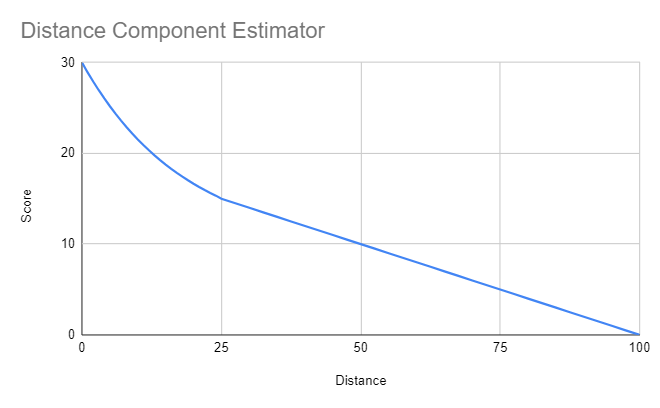

Scoring for Storm Events in TTC
Scoring in TTC can be summed up using a 2x2 contingency table!
Contingency Table
| 2x2 | Observed == Yes | Observed == No |
|---|---|---|
| Forecast == Yes | Hits | False Alarms |
| Forecast == No | Misses | Correct Negatives |
Let's break these scenarios down! First, we will cover False Alarms and Misses, then we will address Hits, and last, but not least, Correct Negatives.
False Alarms and Misses
If your forecast ends up being incorrect, whether you thought a tornado would occur and it did not, or vice versa, your forecast will earn you an underwhelming zero points on the scoreboard...
Hits
Well done, you forecasted for a tornado to occur, and you were right! Now what? Our scoring methods have been refined over years of iterations, trying to come up with a system that rewards people for a great forecast while also not leaving everyone else so far behind that leads become insurmountable!
Abbreviations: Distance to tornado/damage report (DTT); Distance to warning (DTW); Maximum possible tornado score (MaxTor; 30 pts)
Score = Distance + Warnings + Podium + Lone Wolf Bonus (when applicable)
- If DTT < 25 miles:
- Distance Component = (0.02255 * DTT^2)-(1.1248*DTT)+(MaxTor-0.9425)
- Exponential decrease in reward as you get further away... at 25 miles == 15 points
- If DTT > 25 miles, but DTT < 100 miles
- Distance Component = ((-DTT*((0.5*MaxTor)/75))+(2/3*MaxTor))
- Linear decrease in the reward as you get farther away out to 100 miles
- If DTT > 100 miles
- Distance Component=0

- This is based off of the number of warnings you intersect or are near...
- Inside a warning (+8)
- Near a warning (+4), where the DTW ≤ 10 miles
- Example calculation: your forecast intersects 2 warnings and is near 1 more. Warning Component = (2*8) + (1*4)
- If you are 75+ miles from the next nearest forecaster, and DTT < 25 miles: +30 points
- 1st place = +12
- 2nd place = +8
- 3rd place = +4
Correct Negatives
If you forecasted for no tornado to occur, and that forecast is correct, you will receive points according to the max risk level according to the Storm Prediction Center's 1630z Day 1 Convective Outlook (Tornado Probabilities)
Your reward will be assigned based on the table below:
| SPC Risk (%) | Reward |
|---|---|
| 0 | +4 |
| 2 | +8 |
| 5 | +12 |
| 10 | +16 |
| 15 | +20 |
| 30 | +24 |
| 45 | +28 |
| 60 | +32 |
Stats and Metrics In TTC
To add more value to the contest and give our contestents a reason to compete even if their circumstances may limit their ability to be competitive on the cumulative leaderboards, we include a detailed stats tracking sheet! The key metrics that you see on our stats page still rely heavily on the 2x2 contigency table. We will lay them out below!
POD - Probability of Detection
A verification measure of categorical forecast performance equal to the total number of correct event forecasts (hits) divided by the total number of events observed. Simply stated, it is the percent of events that are forecast. The ideal value is 1 (100%).
POD = Hits / (Hits + Misses)
FAR - False Alarm Ratio
A verification measure of categorical forecast performance equal to the number of false alarms divided by the total number of event forecasts. The ideal value is 0 (0%).
FAR = False Alarms / (Hits + False Alarms)
CSI - Critical Success Index
Also called the threat score, is a verification measure of categorical forecast performance equal to the total number of correct event forecasts divided by the total number of storm forecasts plus the number of misses. The CSI is not affected by the number of non-event forecasts that verify. However, the CSI is a biased score that is dependent upon the frequency of the event. The ideal value is 1 (100%).
CSI = Hits / (Hits + False Alarms + Misses)
HSS - Heidke Skill Score
A skill corrected verification measure of categorical forecast performance similar to the success ratio but which takes into account the number of correct random forecasts (chance hits + chance correct rejections). The HSS is equal to the total number of correct forecasts minus the correct random forecasts divided by the total number of forecasts minus the correct forecasts due to chance. This skill score falls within a (-1, +1) range. No incorrect forecasts give a score of +1, no correct forecasts give a score of -1, and either no events forecast or no events observed give a score of 0.
HSS= (Hits + Correct Negatives - Chance)/(Hits + False Alarms + Misses + Correct Negatives - Chance)
Chance = (1 / Number of Forecasts)*((Hits + Misses)*(Hits + False Alarms)+(Correct Negatives + Misses)*(Correct Negatives + False Alarms))
Source Materials!